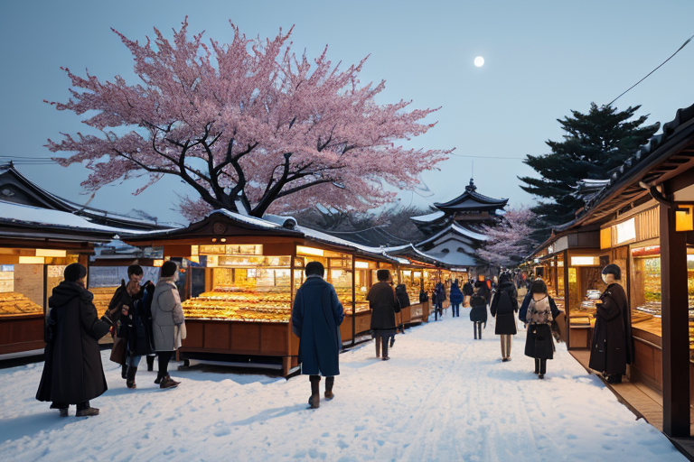
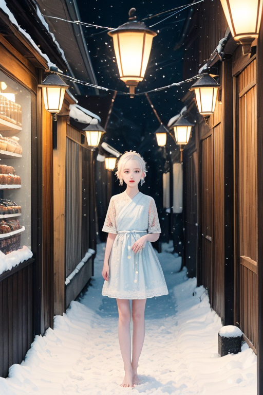
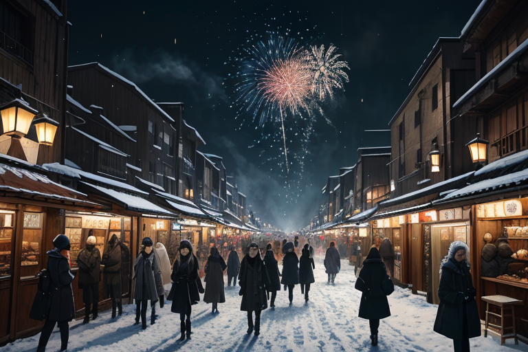
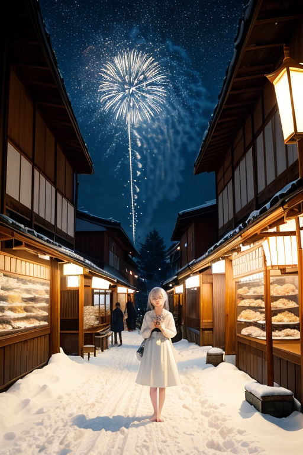
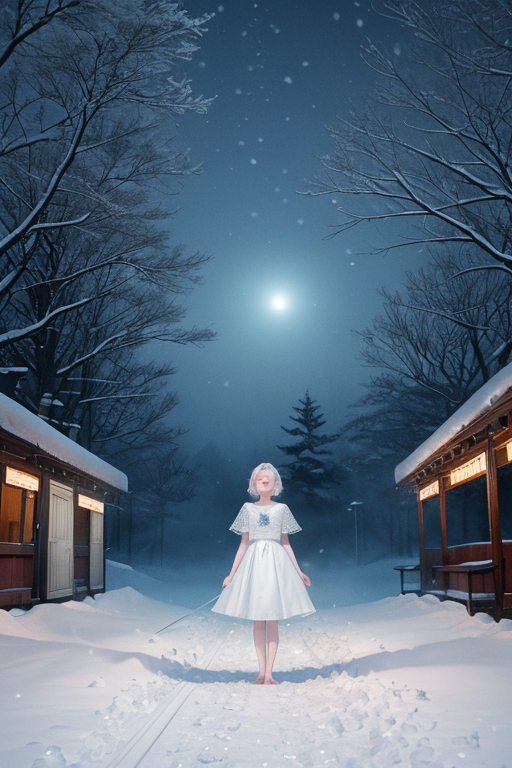

第一章 現実の秋田
あなたはまだ気づいていない。この土地にも、王がいることを。
大曲の花火大会前夜、駅前通りは活気に満ちていた。露店の灯りが闇を切り裂き、きりたんぽの醤油の香り、リンゴ飴の甘い匂いが人混みに溶け込む。商人たちの掛け声、家族連れの笑い声、スマホの画面を覗き込む若者たち。金と人の流れが、この盆地の町に熱を帯びさせていた。その喧噪のただ中、角館武家屋敷通りの枝垂れ桜は、春の賑わいから遠く離れ、冬支度の沈黙に包まれていた。黒い板塀と、その上に広がる枯れた枝は、一切の音を吸い込むかのようだ。
その静寂の中心に、彼は立っていた。純白の外套を纏い、淡い青の光を内に秘めた瞳で、町の「歪み」を見つめている。アキタリア・ネージュ。雪と沈黙の王。彼の前には、見えざる亀裂が幾筋も走っていた。過熱する消費、ふくらむ借金、地域経済を圧迫する大型店の影。人々の欲望と不安が織りなす、商都の地盤そのものの軋みだ。
彼は何も語らなかった。沈黙こそが、この土地の現実をありのままに映し出す鏡だと知っているから。

第二章 歪みの兆候
大曲の花火大会の季節、町は活気に満ちていた。観光客の消費は町の血管を流れる血液のように見えた。しかし、アキタリアの目には、その流れに幾つもの「澱み」が浮かび上がる。駅前商店街のシャッター、若者の流出を示すデータの静かな増加、大型商業施設の陰で息を潜める零細な店舗。これらは、喧噪の裏側で進行する、ゆっくりとした地盤沈下だった。
彼は角館武家屋敷の静かな通りに立つ。観光客の笑い声が枝垂れ桜の下を流れるが、その音の隙間から、空き家となった土蔵の沈黙が滲み出る。土地の「歪み」は、派手な崩壊ではなく、このような小さな喪失の積み重なりとして現れる。
主席妖精ネージュリィが、そっと彼の肩に舞い降りた。無言で、周囲の過剰な熱気を微かに鎮める。王は問うた。この沈黙を保つことは、現実からの逃避なのか。それとも、喧噪に紛れて見失う真実を見据えるための、唯一の力なのか。答えはまだ、降り積もる雪のように、ただ静かに待っているだけだった。

第三章 王の葛藤
大曲の花火大会は、夜空を欲望の奔流で埋め尽くした。観客の熱狂、業者の駆け引き、町を潤す金の流れ。その全てが、土地に微かな軋みを生んでいた。アキタリア・ネージュは、人混みの外れの暗がりに立ち、花火の轟音を無音の雪で包み込む。派手な災いではない。だが、過剰な熱が引き金となり、どこかで小さな歪みが生じるかもしれない。
彼は調整を続けた。花火の炸裂音をほんの一瞬遅らせ、押し合う人波の力を少し逸らす。しかし、その行為のたびに、問いが胸を刺す。この沈黙による介入は、人間の活気そのものを否定する逃避なのか。それとも、この熱狂の果てに訪れるかもしれない「喪失」を、ほんの少しだけ先送りする力なのか。
ネージュリィが彼の頬に触れた。冷たいが、そこには、王が自覚し始めた「苦悩」という感情の熱が伝わってくる。彼は目を閉じた。答えは出ない。ただ、雪が音を吸い込むように、彼は今夜も歪みを静かに飲み込んでいく。

第四章 妖精との対話
大曲の花火大会の夜、人々の歓声が川面を揺らす。アキタリア・ネージュは、闇に溶けるように屋根の上に立ち、打ち上げられる光の奔流を見つめていた。歪みは、この熱狂の中心ではなく、その周縁に生じる。過剰な期待、裏切られた打算、膨れ上がる借金……それらが織りなす目に見えぬ亀裂を、彼は雪のように静かに覆い、微調整していた。
「王様、商いとは不思議なものです」
傍らに現れたナマハルが、仮面の奥から低い声で語り始めた。
「秋田杉の材木も、きりたんぽの米も、かつてはただの『物』でした。人がそこに『値』を見出し、『言葉』を交わすことで、初めて『商品』となる。活気とは、その言葉の渦です」
「ならば、この沈黙は何だ」王が問う。
「言葉が欲望だけに染まり、歪み始めた時、必要なのは、一度、静寂に戻ることでは？」ナマハルは、地上の喧騒を見下ろした。「佐竹藩の時代から、この地は交易で栄えた。しかし、商人たちは必ず、計算の合間で沈黙した。あの沈黙は、逃げでも、諦めでもない。次の一手を見極める『間』です。王様の沈黙も、きっと……」
彼の言葉は、特大の花火の炸裂音にかき消された。光と轟音の洪水の中、王はただ、微かに首を振った。答えは、まだ雪の彼方にある。

第五章「微調整と余韻」
大曲の花火大会が終わり、人々が駅へと流れ込む。その雑踏の中、アキタリア・ネージュは静かに立っていた。彼は目を閉じ、王国の紋章である雪結晶と静円を心に描く。妖精たちの報告が、静寂の波紋のように届く。駅のホームで転びかけた老人の足元の氷を、一瞬で微細な雪粉に変え、横手かまくらで遊ぶ子供が誤って転落する寸前の雪塊を、ほんの少しだけ柔らかくする。それは、災害を消すことではない。ほんの数センチ、ほんの数秒の、誰にも気付かれない調整だ。
彼は、沈黙が持つ力を、今、理解しつつあった。それは無為や逃避ではない。騒音と光の洪水の後、訪れる深い静けさのように、すべてを飲み込み、次の始まりを内側で準備する「間」の力だ。なまはげの仮面が恐怖を制御するように、彼の沈黙は、この土地の感情の流れそのものを整える。
花火の残光が夜空に溶け、最後の観光列車が走り去る。田沢湖は深い藍色に戻り、乳頭温泉の湯気は森に昇る。すべてが、いつもの秋田の夜へと収斂していく。彼はそっと息を吐いた。吐息は冷気に白く曇り、そして消えた。答えは、出たわけではない。ただ、問いを抱えたまま、次の調整へと向かう静かな決意が、胸の内に雪のように積もっていった。
あなたの町にも、王がいる。